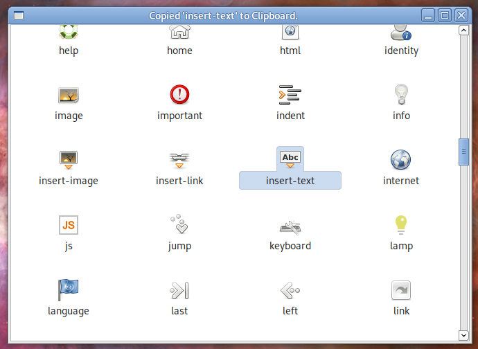
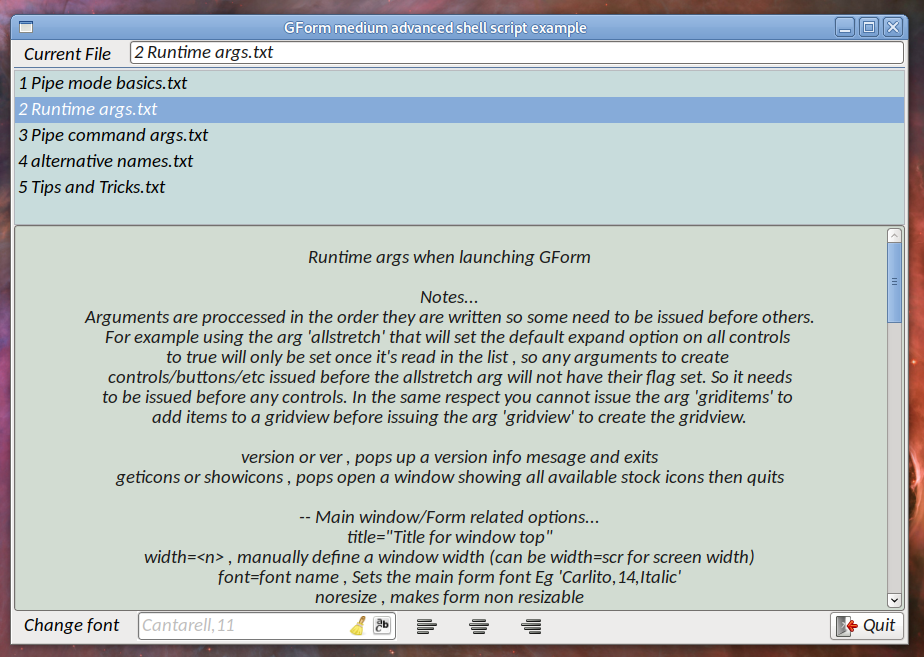
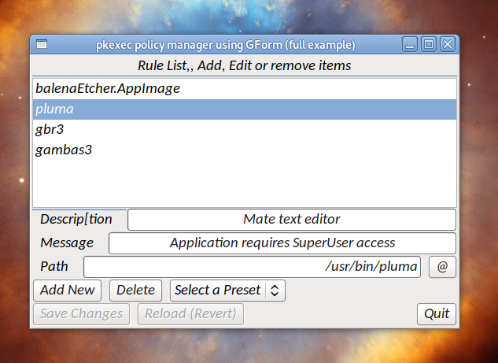

| Command used |
Result obtained |
GForm geticons |
 |
GForm quiet font="Carlito,14,Italic" width=scr-200 pipe="/tmp/fifo1" listen="/tmp/fifo2" title="GForm medium advanced shell script example" box label="|Current File" input="inp1||readonly left" unbox listbox="lb1|$NameList||nostretch lines=6 background=200,220,220" textarea="ta1|Help will be here\nJust select a topic..|stretch readonly lines=10 background=210,220,210" box label="|Change reader font" fontbox="fnt1||stretch linkto=ta1" fbutton="lft||icon=text-left" fbutton="ctr||icon=text-center" fbutton="rgt||icon=text-right" spring button="BQ|Quit|close icon=quit"&false
|
 |
GForm quiet font="Carlito,14,Italic" pipe="/tmp/fifo1" listen="/tmp/fifo2" title="pkexec policy manager using GForm (full example)" label="|Rule List,, Add, Edit or remove items" listbox="lb1|$AppList||stretch" box label="|Description" input="desc||disabled" unbox box label="|Message" input="mess||disabled" unbox box label="|Path" input="path||disabled readonly right" button="freq||disabled nostretch icon=open" unbox box button="add|Add New" button="del|Delete|disabled" combobox="presets|Select a Preset,Pluma,Gambas3,Xed|0" unbox box button="save|Save Changes|disabled" button="rel|Reload (Revert)|disabled" spring button="BQ|Quit|close icon=quit"&false
|
 |
GForm quiet width=400 pipe="/tmp/fifo1" listen="/tmp/fifo2" title="pkexec policy manager using GForm (full example)" label="|Rule List,, Add, Edit or remove items" gridview="gv1|Name,Description,Message,Path|stretch" box label="|Description" input="desc||disabled" unbox box label="|Message" input="mess||disabled" unbox box label="|Path" input="path||disabled readonly right" button="freq||disabled nostretch icon=open" unbox box button="add|Add New|icon=add" button="del|Delete|disabled icon=remove" combobox="presets|Select a Preset,Pluma,Gambas3,Xed|0" unbox box button="save|Save Changes|disabled icon=save" button="rel|Reload (Revert)|disabled icon=refresh" spring button="BQ|Quit|close icon=quit"&false
|
.png) |
GForm quiet font="Carlito,14,Italic" pipe="/tmp/fifo1" listen="/tmp/fifo2" title="GForm medium advanced shell script example" width=350 menu="mMain||Menu" menu="BQ|mMain|Quit|icon=quit close" box button="btnAdd|Add Name|icon=add" button="btnDel|Del Name|icon=delete" spring unbox box label="|Modify name" input="inp1|Fred" unbox checkbox="c1|Got a check box too|on" listbox="lb1|Fred,Freda,Uncle Bob,Sally|0|stretch" box label="|GUI font" fontbox="fnt1||stretch" unbox box spring button="BQ|Quit Button|close icon=quit"&false
|
 |
Answer=$(GForm allstretch return=t width=350 title="GForm button requester example" label="|\nthis is an example of a multiple row button requester\nPressing any button will return the button text to the shell\n" \
box button="|Option 1" button="|Option 2" button="|Option 3" unbox \
box button="|Option 4" button="|Option 5" button="|Quit")
echo "The reply was $Answer"
|
 |